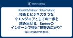

Speee DEVELOPER BLOG
https://tech.speee.jp/
Speee開発陣による技術情報発信ブログです。 メディア開発・運用、スマートフォンアプリ開発、Webマーケティング、アドテクなどで培った技術ノウハウを発信していきます！
フィード

技術とビジネスをつなぐエンジニアとしての一歩を踏み出せる、Speeeのインターンで得た"視野の広がり" 20
20
Speee DEVELOPER BLOG
初めまして！Speee内定者の福井です。26卒の就活生としてSpeeeの2daysインターンに参加しました。 私は、長期インターンも含めて約10社のIT企業のインターンに参加しましたが、Speeeのインターンは特に視野が広がった印象的な機会でした。 この記事では、 「エンジニアとして社会でどう価値を出すか」 という本質に触れたインターンでの学びを、私の実体験をもとにお話しします。技術力に自信がある人にも、まだ不安がある人にも、何かの参考になると嬉しいです！ 「技術が好き」だけでは足りないと気づかされた 1日目：焦りと、1on1で得た自分の立ち位置 2日目：設計の解像度と、スピードの両立 インタ…
12日前

AI時代の市場価値を高める: 「二つの解像度」を磨くSpeee DXエンジニアの成長環境
Speee DEVELOPER BLOG
どうも。デジタルトランスフォーメーション事業本部 (以下、DX事業本部)エンジニアリングマネージャーの石井です。 日々の業務の中で、生成AIをはじめとするAI技術の進化が、我々の事業や働き方に急速な変化をもたらしていることを肌で感じている方も多いのではないでしょうか。 単なる技術トレンドとして捉えるだけでなく、事業開発を担う我々自身がこの変化にどう向き合い、未来を切り拓いていくべきか。本記事では、「今、我々がAI時代の変化をどのように捉え、今後AIとどう向き合っていこうとしているか」、私の考えを言語化したいと思います。 ※ なお、本記事において「エンジニア」と記載する場合は、特に断りのない限り…
1ヶ月前
Copilot Agent modeを活用してaws-sdk-goパッケージをメジャーアップグレード
Speee DEVELOPER BLOG
はじめに アドプラットフォーム事業部で開発を担当している室岡です。 既存のGoのOSS内で参照しているaws-sdk-goパッケージをCopilot Agent mode（以下、Agentモード）を使用してメジャーアップグレードした事例をご紹介したいと思います。 LLMを利用した開発の参考になれば幸いです。 ※ Copilotの使用法そのものの説明は割愛いたします。 開発過程 開発対象 下記のGoのアプリケーションになります。 github.com こちらは、database/sqlパッケージのAthena用ドライバです。 tech.speee.jp 他にもAthena用ドライバは存在しますが…
2ヶ月前
「良いコードレビューとは」というタイトルで「コードレビューどうしてる？ 品質向上と効率化の現場Tips共有会」に登壇しました！
Speee DEVELOPER BLOG
どうも。デジタルトランスフォーメーション事業本部 (以下、DX事業本部)エンジニアリングマネージャーの石井です。 先日行われた、コードレビューどうしてる？ 品質向上と効率化の現場Tips共有会 で「良いコードレビューとは」というタイトルで発表させていただきました。 スライドはこちらです: speakerdeck.com 登壇を振り返って 元々は社内向けに整理していた資料をZennに公開した所、思いの外たくさんの方に読んでいただきました。それがきっかけで今回、Findy様よりオファーをいただき、登壇する運びとなりました。機会をいただいたFindy様、ありがとうございました。 他登壇者の方々の発表…
2ヶ月前
Speee内定者研修：sedコマンドの歴史とBSD/GNU sedの違いを学ぶ
Speee DEVELOPER BLOG
2025年4月入社予定の竹田有真です！今は毎週30分入社前の研修*1を受けています。red-data-tools/red-datastockを題材にRubyGemsの仕組みを学ぶという研修です。クリアコードの須藤さんに説明をしてもらいながら実際に手を動かして学んでいます！ はじめに 今回は研修の中で学んだsedコマンドについて説明します。UNIXの時代から、テキスト処理のための強力なツールとして sed（stream editor）は広く使われています。何十年も前に作られたコマンドですが、今でも役に立つケースがあるので学びました。例えば、CIでテキスト変更処理を自動化するときなどに使えます。自…
3ヶ月前
Speee内定者研修：gemにはテスト関連ファイルを含めなくてもよい
Speee DEVELOPER BLOG
2025年4月入社予定の白戸 (ニックネーム: ユリタニ) です！ 最近は，毎週30分入社前の研修*1を受けています． 内容としては，gemをリリースすることを通じて， red-data-tools/red-datastockを題材にRubyGemsの仕組みを学ぶという研修です． クリアコードの須藤さんに説明をしてもらいながら実際に手を動かして学んでいます． 今回はその研修の中で学んだこととして，gemからの使用しないテスト関連ファイルの削除について説明します． はじめに この研修では，実際に手を動かして上記gemの改善しながら，gemの仕組みやOSS制作に必要な知識を学んでいます． 題材にし…
4ヶ月前
新規プロジェクトで思い切って開発を進めるためにすべき3つの準備
Speee DEVELOPER BLOG
※この記事は、2024 Speee Advent Calendar 25日目の記事です。 前日の記事はこちらになります。 tech.speee.jp はじめに こんにちは！ 2024年1月に中途でSpeeeに入社し、現在は新規プロダクト開発のプロジェクトリーダーを担当している、手塚です。 入社から半年が経過したところで、担当プロダクトのプロジェクトリーダーという役割を初めて任されることになりました。 私自身、エンジニアとしてプロジェクトをリードしていく立場になって色々と学びがありましたので、この記事ではプロジェクトリーダーとして直面した課題と、それらを解決するために取った具体的なアプローチを共…
5ヶ月前
新卒1年目エンジニアが2つのプロダクトの開発に関わって感じた「ユーザ目線で開発すること」の大切さについて
Speee DEVELOPER BLOG
※この記事は、2024 Speee Advent Calendar 24 日目の記事です。 昨日の記事はこちら: tech.speee.jp はじめに こんにちは。不動産DX事業部でエンジニアをしている24新卒の風間です。社内ではコタロウと呼ばれています。 私は新卒エンジニアながら入社してから2つの事業部の開発に携わっています。 周りの同期を見渡してもそのような人はいなく、先輩でもチラホラ見受けられる程度だったため、貴重な体験を改めて学びとして振り返ることで、これからSpeeeへ入社を考えているエンジニアの方に雰囲気等が少しでも伝われば嬉しいです。 目次はこちら はじめに イエウールとHous…
5ヶ月前
エンジニアの成長に技術力は必要条件であって十分条件ではない - 文系新卒エンジニアが大規模開発から得た技術以外の3つの成長
Speee DEVELOPER BLOG
※この記事は、2024 Speee Advent Calendar 23日目の記事です。 昨日の記事はこちら tech.speee.jp はじめに こんにちは、SpeeeのDX事業部でHousiiというサービスのアプリケーション開発をしている24新卒の北田です。大学では法学部で文系の出身でしたが、現在はReactとRailsを使用したフルスタック開発に携わっています。 入社から半年が経ったあたりで、私はサービス開始以来最大規模の新規開発のリードという機会を任されることになりました。このプロジェクトを通じて、私は「エンジニアの成長に必要なのは技術力だけではない」ということを強く実感しました。 そ…
5ヶ月前
エンジニアが事業を動かすための成果定義とは
Speee DEVELOPER BLOG
※この記事は、2024 Speee Advent Calendar 22日目の記事です。 前日の記事はこちらになります。 tech.speee.jp はじめに 初めまして、2022年度新卒でSpeeeに入社し、現在Housii（ハウシー）という完全会員制の家探しマッチングプラットフォームの開発チームでエンジニアをしている大金と申します。 今回は、自分の実体験を元にした記事を書いてみました。 開発物を日々沢山リリースしているものの、イマイチ「事業の成果」に向き合えていないと感じるエンジニアの方々にとって、少しでも今後の動き方の参考となる記事になれば幸いです。 目次はこちら はじめに なぜか「事業…
5ヶ月前
新規事業開発を加速させるために重要なエンジニアの4つの価値観
Speee DEVELOPER BLOG
※この記事は、2024 Speee Advent Calendar21日目の記事です。 昨日の記事はこちら tech.speee.jp 自己紹介 初めまして、23新卒エンジニアの真保です。 学生の頃はCGの研究や組み込みハードウェア開発を行なっており、 web開発は未経験で入社しました。 サマーインターンにおいて「ユーザのどんな課題を解決したいか？」を徹底的に深掘り、 本当に価値あるプロダクトを作ることに強くこだわるカルチャー共感し入社を決めました。 現在では、事業責任者と開発戦略について話したり、 数年後の事業の行先を見据えながらアーキテクチャの意思決定をしたりしています。 この記事について…
5ヶ月前
事業会社マーケターが陥りがちな成果創出のアンチパターン
Speee DEVELOPER BLOG
※この記事は、2024 Speee Advent Calendar20日目の記事です。昨日の記事はこちら tech.speee.jp みなさんこんにちは。 2021年に新卒で入社し、現在はすまいステップという不動産一括査定サイトのマーケティングを担当している八重樫（@yegs_）です。ポーカーが好きです。 入社から一貫してマーケティングに携わっており、中でも広告運用、グロースハック等のプロモーション領域に（たまに溺れながら）潜っている人間です。 今回の記事では、目標達成を阻むアンチパターンについて、ご紹介していきます。 ↓社会人1,2年目に書いたアドベントカレンダー記事はこちら tech.sp…
5ヶ月前
新卒3年目エンジニアがマネジメントに挑戦することで見えた事業と個人の成長をつなぐ道
Speee DEVELOPER BLOG
不動産DX事業部でエンジニアをしている 22 新卒の高島（@takatea_dayo）です。本ブログでは新卒 3 年目エンジニアが実際にマネジメントに挑戦して直面した課題と、それを通じて得た重要な学びをまとめます。特に、事業成果と個人の成長を結びつけるられたことなどにも触れながら、この半年を振り返ります。将来エンジニアとしてマネジメントにも挑戦したいと考えている方に少しでも参考になれば嬉しいです。
5ヶ月前
なんとなく生きてきた私が、Speeeで手ごたえをつかんだ話
Speee DEVELOPER BLOG
※この記事は、2024 Speee Advent Calendar18日目の記事です。 昨日の記事はこちら tech.speee.jp はじめに エンジニア新卒採用担当の伊藤です。2年前に、10年ぶり2回目の転職をしてSpeeeに入社しました。 初めての就職先を希望や不安や葛藤を抱えながら探している学生のみなさんと対峙している中で、「わかるわかる」と共感の日々を過ごしています。 学生のみなさんから出てくる葛藤に過去の自分を重ねながら振り返ってみようと思います。これを読んで「あ、案外大丈夫そうだな」と安心してもらえるとうれしいです。 はじめに 前職のはなし 肩書と中身の乖離にどんどん辛くなってい…
5ヶ月前
実務未経験のエンジニアがユーザ思考を身につけるためのhow to
Speee DEVELOPER BLOG
※この記事は、2024 Speee Advent Calendar17日目の記事です。 昨日の記事はこちら tech.speee.jp はじめに こんにちは。24卒エンジニアの木下です。 学生時代は個人開発や友達と高専プロコンなどのハッカソンに参加しており、実務経験などは特にない状態でSpeeeに入社しました。 現在はイエウールという不動産売却の一括査定サービスの開発をしております。 この記事では、個人開発・ハッカソンなどの開発経験しかなかった自分が入社して、自分自身の課題の解像度が上がった話を書ければと思っています。 実務経験がなく、業務のイメージがつかない学生さんに読んでいただけると幸いで…
5ヶ月前
プロジェクトのあるべき姿が見えていない時、どう前に進めていくか
Speee DEVELOPER BLOG
はじめに 不動産業界向けの新規プロダクトを開発しているspeee_shinoです。新卒で入社してから9ヶ月が経ちました。Speeeに入社するまでは、個人でアプリやサイトをリリースしながら技術を学んできましたが、実際に開発現場に入ってみると、開発チームだけでは解決できない、あるいは気づくことすら難しい問題が多く存在することを痛感しました。 そうした中で、プロダクトの課題解決に向き合うプロダクトマネージャー（以下、PdM）の行動を間近で見る機会を得たことは、私にとって非常に大きな学びとなりました。特に、課題やステークホルダーが複雑で、「こうあるべき」という理想の姿がまだ明確になっていない状況下での…
5ヶ月前
査定依頼のマッチングシミュレーションをチーム開発で作成した話
Speee DEVELOPER BLOG
※この記事は、2024 Speee Advent Calendar15日目の記事です。 昨日の記事はこちら tech.speee.jp 2024年に新卒としてSpeeeに入社しました、中島です。すまいステップというサービスのエンジニアとして開発にあたっています。今回は、査定依頼のマッチングシミュレーションをチーム開発で作っていく過程で得た学びを書こうと思います。チームでの開発経験がまだなくこれから始めるという方に、チーム開発はこういうものだというイメージをつけていただけるとありがたいです。 マッチングとは すまいステップのマッチング すまいステップは、不動産会社が設定した条件に基づき、家を売り…
5ヶ月前
新卒エンジニアが「開発だけ」をやめたとき、仕事は圧倒的に面白くなる
Speee DEVELOPER BLOG
※この記事は、2024 Speee Advent Calendar14日目の記事です。 昨日の記事はこちら tech.speee.jp はじめに こんにちは！2023卒で入社し、今はイエウールという自社サービスのWebサービスの開発をしている、木俣と申します。周囲からはきまっちゃんと呼ばれています！この記事が、「Speeeのエンジニアになると「開発」の他になにができるようになるか」知りたい方に届くと嬉しいです。 突然ですが、Speeeでは、働くうえでの指針となる15のカルチャーが存在しています。 Speee Style - 株式会社Speee これは、Speeeメンバーが持つ共通の価値観であり…
5ヶ月前
振り返りで失敗を良質な失敗に変え、成果に繋げた話
Speee DEVELOPER BLOG
※この記事は、2024 Speee Advent Calendar13日目の記事です。 昨日の記事はこちら tech.speee.jp はじめに こんにちは、2024年新卒で株式会社Speeeに入社し、現在すまいステップ（すまステ）という、不動産売却マッチングプラットフォームの開発チームでエンジニアをしている渋谷と申します。 今回は、新卒エンジニアとして挑戦・失敗を繰り返す中で、自分がどうやって自身の問題に向き合い、思考・行動を変化させ、成果に繋げてきたかをお話しできればと思います。新卒エンジニアとしてこれから開発に携わっていくが、経験を成果に繋げられるか不安な方にとって、少しでも参考になれば…
5ヶ月前
プロダクト開発における筋のいい手段を導く意思決定プロセス
Speee DEVELOPER BLOG
※この記事は、2024 Speee Advent Calendar12日目の記事です。 昨日の記事はこちら tech.speee.jp こんにちは、DX事業部のエンジニアの中嶋です。 プロダクト開発ではユーザーの課題を解決するため、要件、設計、アーキテクチャといった多くの「手段」を日々検討しています。 手段を検討するなかで意識的か否かに関わらず行われているのが「意思決定」です。感覚的な意思決定をしてあとで後悔をしたり、意思決定に時間をかけすぎることはしばしばあります。こうした問題は、意思決定プロセスの質を高めることで改善できます。よい意思決定プロセスは、より筋のいい手段を導きます。 本記事では…
5ヶ月前
ViewComponentを開発特性に合わせて拡張する
Speee DEVELOPER BLOG
※この記事は、2024 Speee Advent Calendar11日目の記事です。 昨日の記事はこちら tech.speee.jp こんにちは。株式会社Speee DX事業本部でエンジニアをしている川田と申します。 24新卒で、普段は主にRailsアプリケーションの開発業務にあたっています。 この記事では、所属するチームにおいてViewComponentというライブラリを導入し、一部改造して運用しているお話をします。 技術選定からその改造までを、開発の特性に合わせて行った例として、主に就活中の学生さんなどが開発業務への理解を深める助けになれば幸いです。 開発の特性と、純粋なRailsとのミ…
5ヶ月前
制約が生む創造性と事業へのインパクト
Speee DEVELOPER BLOG
※この記事は、2024 Speee Advent Calendar 10日目の記事です。 昨日の記事はこちら はじめに リフォームDX事業部でヌリカエ・リフォスムなど複数のプロダクト開発に携わっている黒須と申します。 入社から2年間は、不動産DX事業のイエウールでSEO・LPO・オペレーション開発などを担当していました。 現在は PjM・スクラムマスターとして４レーンの開発を統括しつつ、自らも開発 Issue を持ちながら業務に取り組んでいます。 この記事では、エンジニアとして主体的に事業へ貢献するために私が心がけていることをご紹介します。 学生やエンジニア未経験の方には少し難しい内容かもしれ…
5ヶ月前
ユーザが快適にページを閲覧できるようにHousiiのページ表示速度を改善した話
Speee DEVELOPER BLOG
※この記事は、2024 Speee Advent Calendar9日目の記事です。昨日の記事はこちら tech.speee.jp はじめまして、24卒で入社して不動産DXのHousii BUでエンジニアをしている山本です。 この記事では2024年10, 11月に行ったHousiiのページ表示速度改善についての話を書いていきたいと思います。Speeeで技術的なチャレンジができるか不安に思っている学生さんや、単純にページ表示速度を速くしたいというエンジニアの方に読んでいただけると嬉しいです。 1. そもそもHousiiはどのようなプロダクトか 2. 今回解決したかった問題 3. ページ表示速度を…
5ヶ月前
チームで認識を統一するためのRails開発ガイドライン
Speee DEVELOPER BLOG
※この記事は、2024 Speee Advent Calendar8日目の記事です。 昨日の記事はこちら tech.speee.jp はじめに こんにちは。リフォームDX事業部で開発を担当している佐藤です。Speeeには5年在籍していて、現在はリフォームDX事業部というところでプロダクト作りに関わらせてもらっています。 この度、新しいメンバーと共にRails開発のプロジェクトを立ち上げるにあたって、最速でチームの認識を統一していくためのガイドラインを作りました。よく言語化できたので、少し加工した内容を公開しようと思います。 私自身、エンジニア歴は10年以上で、Railsも10年くらいやっていま…
5ヶ月前
入社半年のWebエンジニアが理解した、ブロックチェーンの面白さと技術の研鑽
Speee DEVELOPER BLOG
※この記事は、2024 Speee Advent Calendar ７日目の記事です。 昨日の記事はこちら tech.speee.jp Datachainのエンジニアリングマネージャーの新田です。 この記事ではWebエンジニアの経験をしてきた私が入社して半年経って、「ブロックチェーン何も分からん」から「なるほどブロックチェーン面白い」と感じている今を通して、 エンジニアとしてブロックチェーンは何が面白いのか？ ブロックチェーンという別の技術に触れることで改めて理解した技術への印象 技術を捉え直したことで変化した技術成長の考え をお伝えできればと思います。 自己紹介 Datachainに入社した…
5ヶ月前
常に目的を見失わずにいたい。EMとして開発文化を作るために取り組んでいること
Speee DEVELOPER BLOG
※この記事は、2024 Speee Advent Calendar 6日目の記事です。 昨日の記事はこちら: tech.speee.jp どうも。デジタルトランスフォーメーション事業本部 (以下、DX事業本部)エンジニアリングマネージャーの石井です。 今回は我々が日々大切にしている「目的思考」のようなバリューを開発組織全体で体現するために、私が取り組んでいることを言語化できればと思います。 常に目的を見失わずにいたい、目的志向開発を目指して 開発組織全体で目的思考を体現するために取り組んでいること 私自身が暗黙知的なものを言語化し、メンバーに伝え続けること 各リーダーに大きな機会を与え、挑戦し…
5ヶ月前
知的好奇心を開放しよう
Speee DEVELOPER BLOG
不動産DX事業部でプロダクトマネージャーをしている酒井（@ryo-touch）です。社会人になって5年が経ち、自分が自分の仕事を面白くするコツは「自分の知的好奇心を開放すること」だと考えるようになりました。興味をもって問いを立て、探求していくことで結果として目の前のものがすべて面白く映るようになりました。この記事では、自分なりに知的好奇心の意識が向いてることを言語化しました。
5ヶ月前
既存事業のエンジニアが考える「依頼されたものを開発するだけ」からの脱却について
Speee DEVELOPER BLOG
※この記事は、2024 Speee Advent Calendar4日目の記事です。 昨日の記事はこちら tech.speee.jp こんにちは。22卒エンジニアの長谷川と申します。現在は、デジタルトランスフォーメーション事業本部にてイエウールというサービスのアプリケーション開発業務とインフラ業務を担当しております。 この記事では、現在従事している既存事業の開発にて自分がよく陥いる「依頼されたものを開発するだけ」の状態からの脱却について試行錯誤していることを書いていきます。「エンジニアが事業貢献するって具体的にどういうことだろう」と疑問に感じている方に、1つのサンプルを提供できれば幸いです。 …
5ヶ月前
採用オペレーションを考えていたらアトラクトの話になった
Speee DEVELOPER BLOG
※この記事は2024 Speee Advent Calendar 3日目の記事です。 昨日の記事はこちら tech.speee.jp はじめに 株式会社Speee 中途採用部オペレーション企画推進グループの岡野谷（@okanoya）です。自分の現在位置を確かめるべく「私たちが何をし、何を目指しているのか」を書き留めておこうと思っています。よろしくお願いいたします。 ものすごい面接体験をした いきなりの告白です。私は4年前、Speeeの面接で圧倒的に惹きつけられました。2時間弱の面接で「こんなに会話が面白いのはなぜだ？」という懐疑の気持ちと「もっと話を聞きたい」という惜別の気持ちが入り交じってい…
5ヶ月前
新卒エンジニアが大規模リファクタリングの失敗から学んだ事業との向き合い方
Speee DEVELOPER BLOG
※この記事は、2024 Speee Advent Calendar2日目の記事です。 昨日の記事はこちら tech.speee.jp こんにちは！ 2023年に新卒でSpeeeに入社し、イエウールというサービスで開発を行っている林崎と申します。 Speeeに入社するまでは、自分なりにコードを書いて自己満足をする程度の経験しかなかった私ですが、新卒1年目の終わりごろにいきなり大規模リファクタリングに挑戦させてもらえることになりました。 今回は、大規模リファクタリングが失敗に終わってしまうまでの顛末と、そこで得られた「エンジニアとして事業にどのように向き合っていくべきか」に対する学びについて共有し…
5ヶ月前